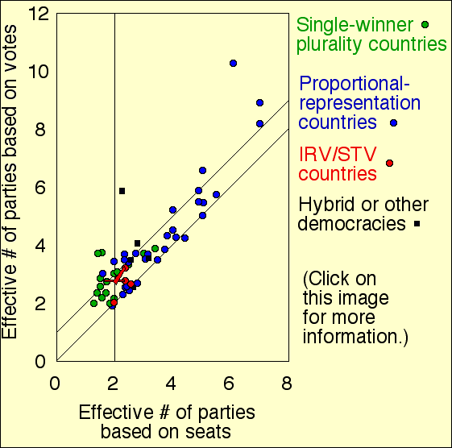

(Executive summary) (Duverger's own words verbatim) (How many people are happy about 2-party domination?) (Return to main page)
There is nothing which I dread so much as a division of the republic into two great parties, each arranged under its leader, and concerting measures in opposition to each other. This, in my humble apprehension, is to be dreaded as the greatest political evil under our Constitution.
– John Adams, Letter to Jonathan Jackson, October 1780. [Adams was a US "founding father," wrote two books on democracy theory/practice, and served as the second US president 1797-1801.]
As everybody, especially political scientists, has noticed, the USA is immensely 2-party dominated. Every presidential election after 1824 has been won by a member of one of the two major parties (with the asterisk that the parties changed their names a few times during the early 1800s). In the 2004 presidential election, the top 2 party's candidates got 50.7% and 48.3% of the votes. No other candidate got more than 0.38%, with all the others combined getting under 1%. Holy cow! Talk about domination!
More about: 2-party stranglehold in USA The histories of US third parties
And why is that? Can it really be that this few Americans support any of those other candidates? Can it really be that America really believes with this incredibly great unity that the Republicans and Democrats represent the absolute summit of political thought, with nothing else and no other combination of views possibly being superior?
I think not. This is a completely distorted picture being passed off as a "fair" and "democratic" system. It can cause immense harm.
So: why the huge domination? Because: few people are going to be foolish enough to "waste their vote" by voting for anybody besides one of the top two. That causes 3rd parties to get artificially low vote totals. That in turn causes them to get weaker and die – not to mention causing it then to be even more foolish to waste your vote for them next election, thus 2-party domination is self-reinforcing. And not only that, under the plurality system voting for a 3rd party candidate not only "wastes" your vote but in fact makes it more likely that the opposite of the candidate you want will be elected from the top 2 parties. That is a severe disincentive to vote third party. Over time all this leads to self-reinforcing 2-party domination.
It is a lot like having your arm jammed in some machinery. If you try to run the machinery harder to unjam it, it just jams harder, not to mention causing you excruciating pain.
Political scientists call this 2-party jammed-domination "Duverger's law" after Maurice Duverger, a French political scientist.
In any voting system in which Duverger's law holds, third parties are going to be permanent doormats. And the rest of us consequently are going to suffer from massively reduced voter choice, massive idea-deficit, and massive quality deficit in our government.
Duverger's law is an experimental fact supported by vast amounts of data from governments around the world throughout time. Several political science books present convincing tables and graphs of such data. (See "further reading" at the end.) Duverger holds both in plurality systems and in the IRV voting system. (These are the IRV countries: Ireland, Australia, Malta, and with the recent addition of Fiji. All are 2-party dominated in IRV seats, despite having systems that would seem more multi-party-genic than the USA would be under IRV. You can also check this mathematical proof or see this IRV⇒2-party-domination explanation based on an example from Adam Tarr, or consider the effects of naive exaggeration voters.) Duverger also plausibly might hold in all Condorcet systems with strict rank-orderings as votes (click the link and check the "Strategy and 2-party domination" section to see why; also see this simple numerical example, this explanation in a nutshell, and this more general mathematical proof).
So third parties who want to break out of this vicious cycle should not support plurality, IRV, or Condorcet with rank-orderings as votes. They should support Range (or perhaps Approval) voting, or the top-2-runoff (second round) system. But as you can see from tables of real-world data, Range voting leads to a lot more pro-third party votes, at least initially, than Approval. I repeat, a lot more. That is enough to get third parties off the ground. It won't be enough by itself to make them actually win (they will still be well behind the top 2 parties in terms of money, organization, experience, and present-day voter appeal), but it will level the playing field allowing them to win if they have the best candidate once they have acquired enough funds and organization – which it would then be possible for them gradually to acquire, since they would no longer be continually stomped-on.
So in summary, the question for 3rd party supporters when they consider "should we support range voting?" really is "do you like survival?" If you think survival is pretty important, then range voting should be your top priority. And I mean top. More important than every single other issue.
So join CRV now because it is the group pushing for range voting.
Gary W. Cox: Making Votes Count, strategic coordination in the world's electoral systems, Cambridge University Press 1997. (See pp.21-24 for a tabular comparison of the 16 two-elected-house democracies in the early 1990s for purpose of confirming Duverger's law.)
Arend Lijphart: Democracies, Yale Univ. Press 1984 (tables 7.3 and 8.4 give Duverger data).
Warren D. Smith: Candidate incentives under different voting systems, and the self-reinforcing deterioration of US democracy, #76 here.
Rein Taagepera & Matthew S. Shugart: Seats and votes: the effects and determinants of electoral systems, Yale University Press, 1989. (Has similar Duverger-confirming datasets, including as pictures rather than just tables. E.g. see figure 8.1 p.84 and 8.3 p.87; note the latter figure lumps in IRV voting with plurality as additional "two-party-genic" system, agreeing with my view IRV and plurality both obey Duverger's law. Note that all the PR democracies have lots of parties and all the plurality countries have 2; the difference is like night and day.)